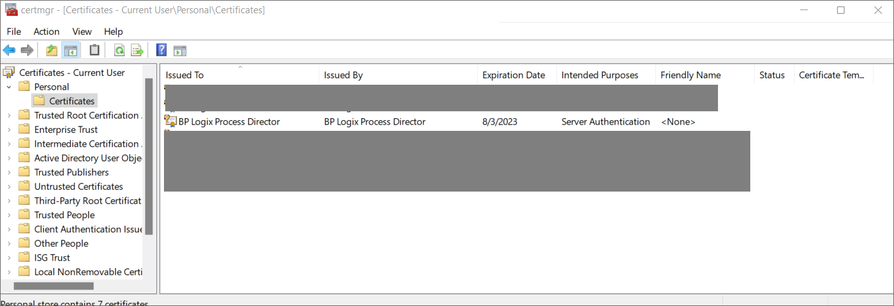
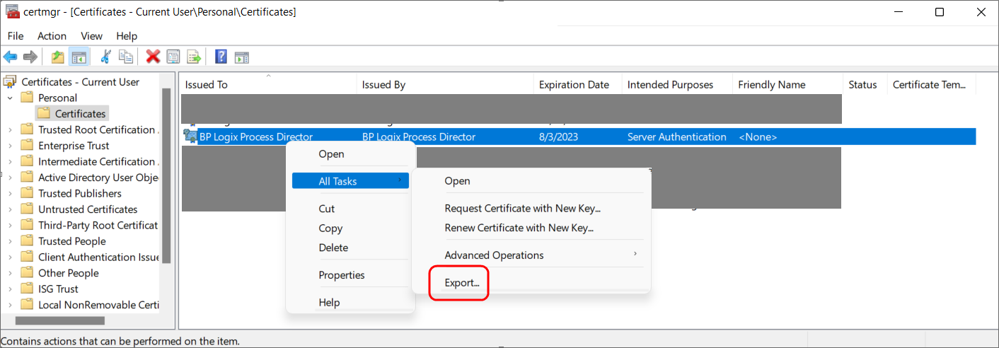
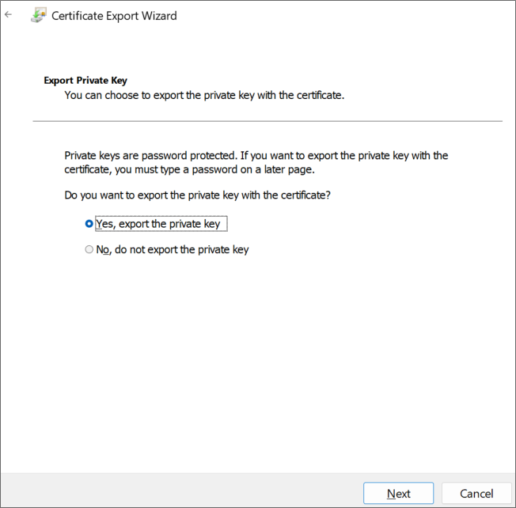
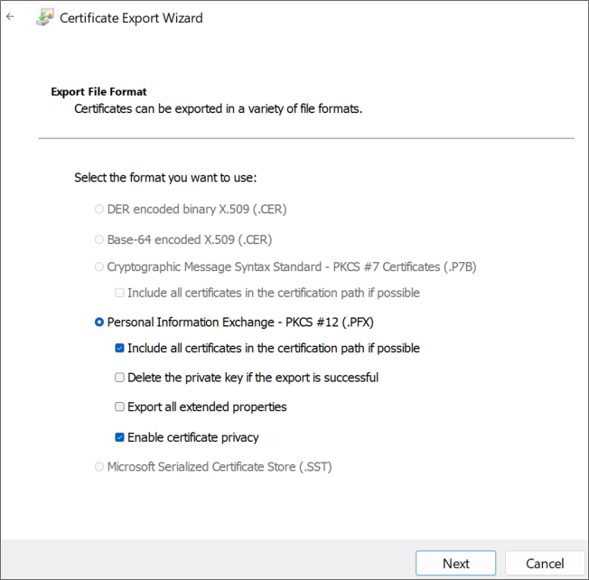
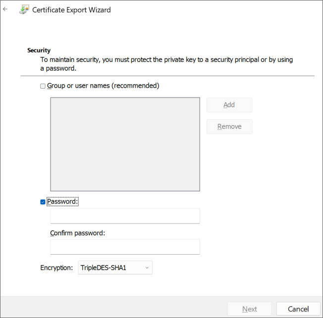
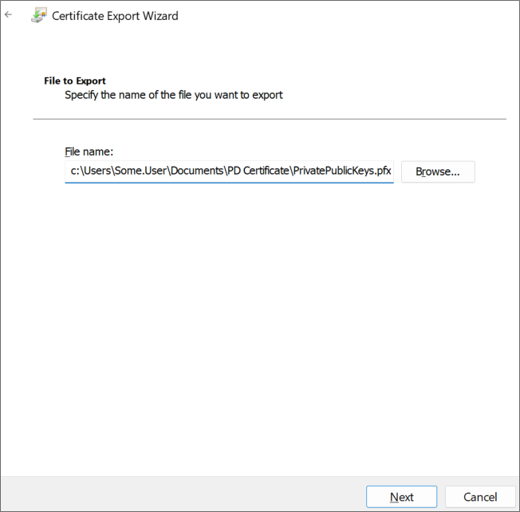

First, using a text editor like Notepad, copy and paste the following text into a new document:
[Version]
Signature = "$Windows NT$"
[Strings]
szOID_ENHANCED_KEY_USAGE = "2.5.29.37"
szOID_KEY_ENCIPHERMENT = "1.3.6.1.5.5.7.3.1"
[NewRequest]
Subject = "cn=BP Logix Process Director"
MachineKeySet = false
KeyLength = 2048
HashAlgorithm = Sha1
Exportable = true
RequestType = Cert
KeyUsage = "CERT_KEY_ENCIPHERMENT_KEY_USAGE"
; The following values can be changed to generate certificates that expire
; sooner or later depending on your organizations needs. The default is 1 year.
ValidityPeriod = "Years"
ValidityPeriodUnits = "1"
[Extensions]
%szOID_ENHANCED_KEY_USAGE% = "{text}%szOID_KEY_ENCIPHERMENT%"
Once you've done so, save the document as an INF file in a folder on your system, e.g., c:\Users\Some.User\Documents\PD Certificate\CertReq.inf.
Open the Windows Command Prompt. You can press the [WINDOWS] key, type "cmd", then select the "Command Prompt" application.
In the Command Prompt, open the directory in which you installed the INF by using the cd command, and the folder path to the INF file, then pressing the [ENTER] key. Using the example above, you'd need to type:
cd c:\Users\Some.User\Documents\PD Certificate\
Once the directory changes, type the following and press the [ENTER] key to run the certreq application.
certreq -new certreq.inf PublicKey.cer
Running the certreq application will create the certificate, and add it to the Windows Certificate Manager. To continue, you'll need to open the Certificate Manager to access the new certificate. To open the Certificate Manager, you can press the [WINDOWS] key, type "certmgr", then select the "Manage computer certificates" option. When the Certificate Manager opens, you'll need to navigate to the Personal\Certificates folder, where you should see the certificate issued to and by BP Logix Process Director.

Right-click that certificate and then select All Tasks > Export.

The Certificate Export Wizard will open. On the first screen, click the Next button. On the Export Private Key screen, select Yes, export the private key, then click the Next button.

On the Export File Format screen of the Wizard, Ensure that you select the following options:
- Personal Information Exchange - PKCS #12 (.PFX)
- Include all certificates in the certification path, if possible
- Enable certificate privacy

On the Security screen, check Password as the security protocol and enter a password twice.
 Be sure to store this password securely, you will need it in future steps.
Be sure to store this password securely, you will need it in future steps.
 Be sure to use a long, sufficiently complex password in line with your organization’s cryptographic standards.
Be sure to use a long, sufficiently complex password in line with your organization’s cryptographic standards.

On the File to Export screen, store the resulting PFX file in the same folder as you stored the CertReq.Inf and PublicKey.Cer files, then click the Next button.

Click the Finish button on the next Wizard screen, then OK to finish the Wizard and close it.
BP Logix recommends that you remove the certificate installed in the Certificate Manager by right-clicking it and then selecting Delete followed by Yes to delete it in the confirmation dialog.
Keep both the PublicKey.cer and PrivatePublicKeys.pfx files handy for subsequent steps in this setup process. You should also archive them in a secure, backed up location as well.